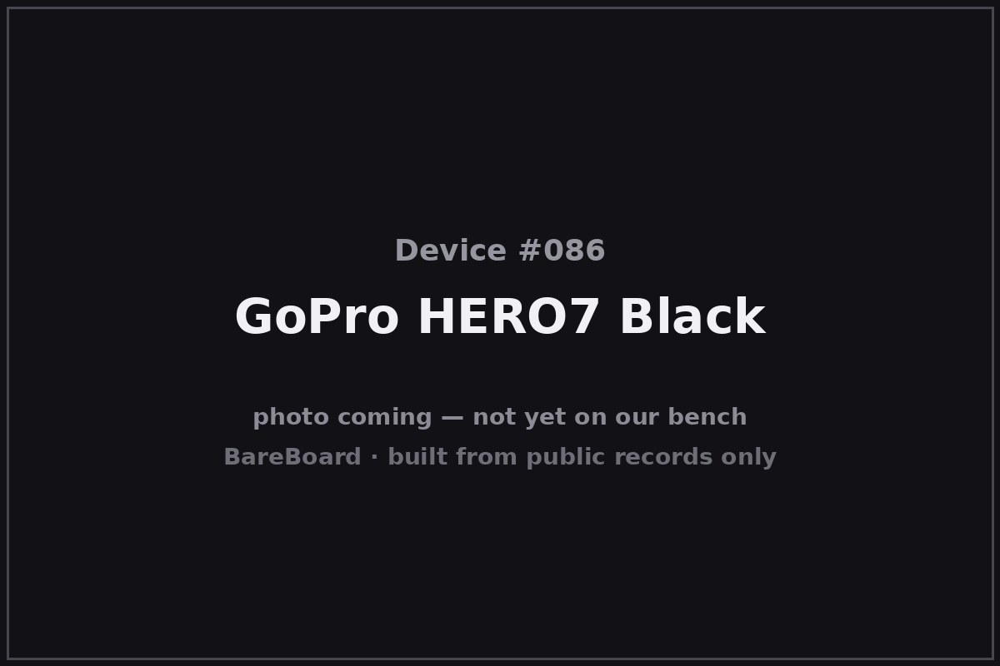

The Autopsy Report · Device #086
GoPro HERO7 Black
The HERO7 Black is the GoPro that killed the gimbal: its HyperSmooth electronic stabilization was so good that action-camera shooters sold their motorized stabilizers. Announced in September 2018, it paired the GP1 processor with a built-in gyroscope to smooth footage in-camera — and made 'gimbal-like' a software feature.
What is this thing?
The GoPro HERO7 Black is a rugged action camera, model SPCH1 — the flagship of GoPro's 2018 HERO7 line (Black, Silver, White). It shoots 12-megapixel stills, 4K/60 video, 1080p/240 slow motion, and is waterproof to 10 meters without a housing. SlashGear
Its defining feature is HyperSmooth: electronic image stabilization driven by the camera's built-in gyroscope, marketed as delivering gimbal-like smoothness with no external stabilizer. No Film School
Whose box is this?
This one isn't on our bench — yet. Nothing here comes from a BareBoard teardown: no disassembly, no boot logs, no bench measurements, no firmware in our hands. Everything below is built from public records — the government's FCC filing, the manufacturer's own documents, and contemporary press — read carefully and cited line by line. That's the deal with these reports: when a fact can't be verified from a public record, we say so, out loud.
The moment this hardware crosses our bench, this report gets a second act: our own photos, our own measurements, and anything the public record got wrong gets corrected.
A short history
GoPro announced the HERO7 line on September 20, 2018, with the Black at $399, Silver at $299, and White at $199 — the first time GoPro sold three distinct tiers under one generation. SlashGear Alongside HyperSmooth it introduced TimeWarp (stabilized time-lapse video), live streaming straight from the camera, and SuperPhoto intelligent HDR. No Film School
Under the hood, the Black runs GoPro's GP1 processor — the same chip as the HERO6, but with the HERO7's firmware unlocking its stabilization and scene-analysis headroom. New Atlas
The outside

The HERO7 Black is the classic GoPro brick: a rubberized, waterproof body with the lens and a small status screen on the front, a 2-inch touchscreen on the back, and the side door covering USB-C, micro-HDMI, and the microSD slot. Contemporary coverage describes the familiar rugged shell carried over from the HERO5/6 generation. New Atlas
Reading the plastic
Mold marks, date wheels, material codes — the shell's birth certificate. This is bench-only evidence: without the physical unit in our hands, there's nothing honest to read here. What the enclosure looks like is described above from public photos; what's molded into it awaits the bench.
The board
No internal-photograph exhibit for the SPCH1 has been verified in open research, so the board layout is unknown. What the public record supports: the Black is built around GoPro's GP1 system-on-chip paired with a gyroscope for HyperSmooth, in a sealed waterproof chassis with USB-C, micro-HDMI, and microSD on the side. New Atlas The component-level details — memory, power management, the exact sensor — await a donor unit.
Under the microscope: the chips
- GP1 (GoPro) — GoPro's custom system-on-chip, carried over from the HERO6 and driving HyperSmooth, TimeWarp, and SuperPhoto on the HERO7 Black. New Atlas
- Image sensor, DRAM, and power-management parts are unverified for this model from public records — deliberately not listed.
The government's file on this box
The FCC equipment authorization is FCC ID CNFSPCH1, model SPCH1, grantee GoPro, Inc. fccid.io filing The application is recorded as filed June 30, 2017. No internal-photograph exhibit has been verified in open research.
Listening in
We have no boot log for this device — no unit on the bench means nothing to listen to. But the posture is worth stating up front, because it governs everything BareBoard ever does with a live device.
We listen, we don't knock. A serial console is a place to watch a device narrate its own startup, not a place to log in, change things, or break past anything the manufacturer locked. On our bench we attach read-only: power and ground, one receive wire, and silence on the transmit line. We never use JTAG or SWD debug headers to take control, never extract or modify firmware, never hunt for credentials, and never publish anything that would let someone else bypass a lock or defeat authentication.
When this device arrives, the first question will be: where does it talk, and does it talk to us unprompted? Until then, that question stays open.
What we found
- The HERO7 Black (model SPCH1) launched September 20, 2018 at $399, headlining HyperSmooth gyro-based stabilization.
- It runs GoPro's GP1 processor — the one chip on this board the public record firmly supports.
- The rest of the board — sensor, memory, power chain — is undocumented in public records and awaits the bench.
What we didn't do
- We never opened a unit, attached to a debug port, or powered one up for this report.
- We never extracted, modified, or shared any firmware or software.
- We never published or used any credentials, keys, or bypass techniques.
- No boot logs, no bench measurements, and no photos of our own — because there is no unit of ours to photograph. The device photo above is credited in its caption.
By the numbers
- Launch: September 20, 2018
- Model: SPCH1
- Video: 4K/60, 1080p/240
- Stills: 12 MP, SuperPhoto HDR
- Waterproof: 10 m, no housing
- Price at launch: $399
- FCC ID: CNFSPCH1
- Bench status: Not yet on our bench
Words to know
- HyperSmooth
- GoPro's gyro-assisted electronic image stabilization — software smoothing using the camera's motion sensor.
- TimeWarp
- GoPro's stabilized time-lapse video mode, introduced on the HERO7 Black.
- GP1
- GoPro's custom camera system-on-chip, first used in the HERO6.
Sources & confidence
- GoPro HERO7 Black announcement — New Atlas, Sep 2018 link — Confirmed
- GoPro rolls out HERO7 cameras — No Film School, Sep 2018 link — Confirmed
- GoPro Hero 7 release date and pricing (Black/Silver/White) — SlashGear link — Confirmed
- FCC filing CNFSPCH1 (grantee: GoPro, Inc.; application filed 2017-06-30) — fccid.io link — Likely
- Full chip list beyond the GP1 — no verified public record found — Unknown
Legal note. BareBoard is an educational project. Everything on this page is derived from public records — our own bench work begins only when hardware arrives. We don't publish, host, or distribute firmware, keys, passwords, or credentials, and nothing here bypasses a lock, defeats authentication, or extracts software from a device. Product names and trademarks belong to their respective owners and appear here only to identify the hardware. If you believe anything here infringes your rights, contact us and we'll address it promptly.